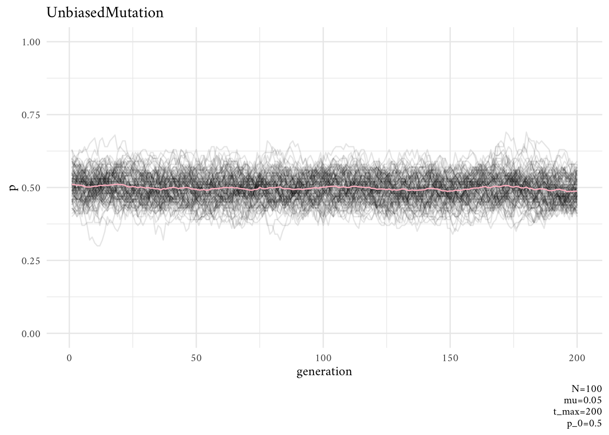
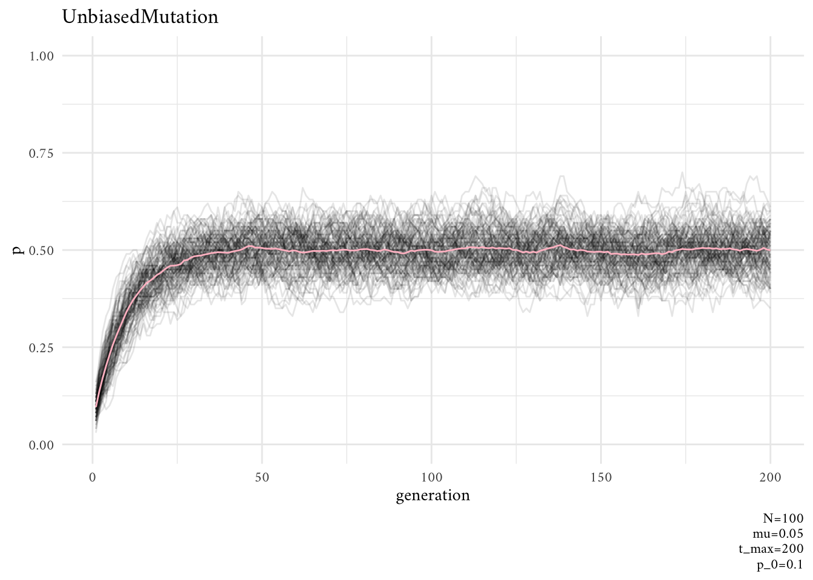
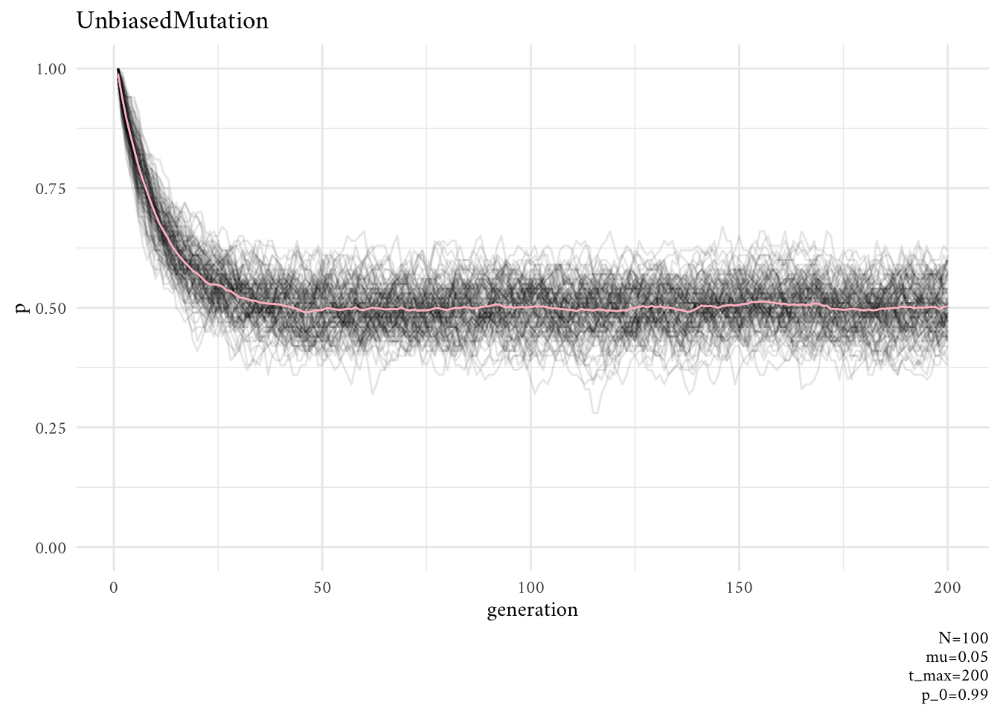
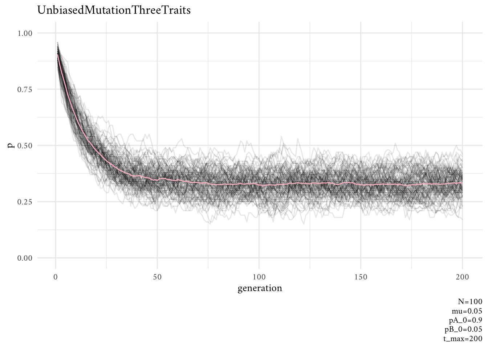
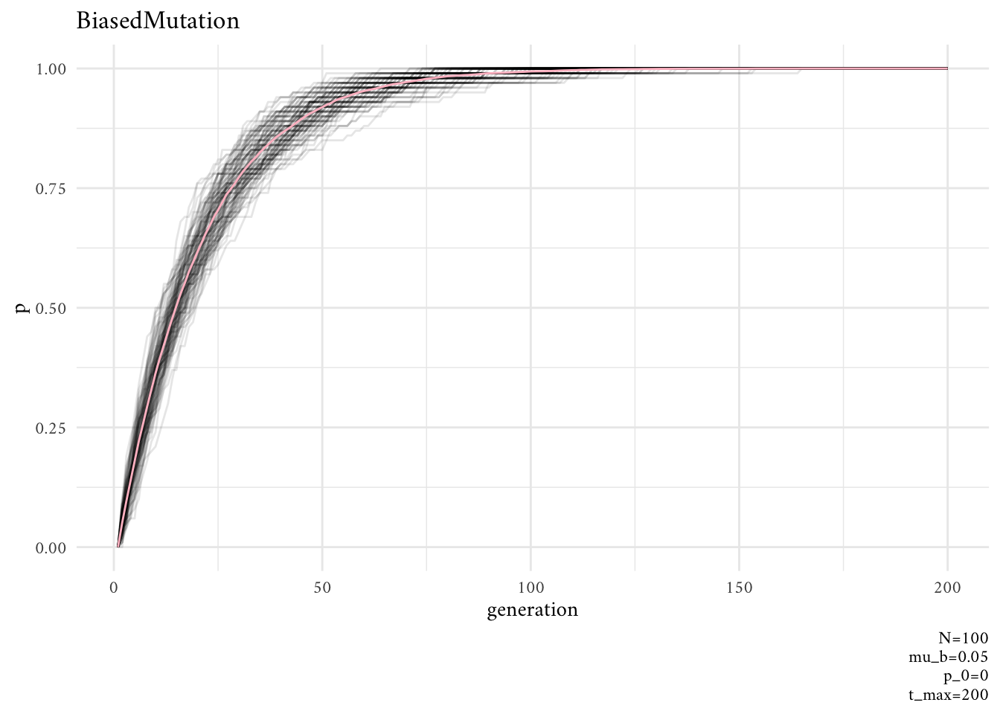
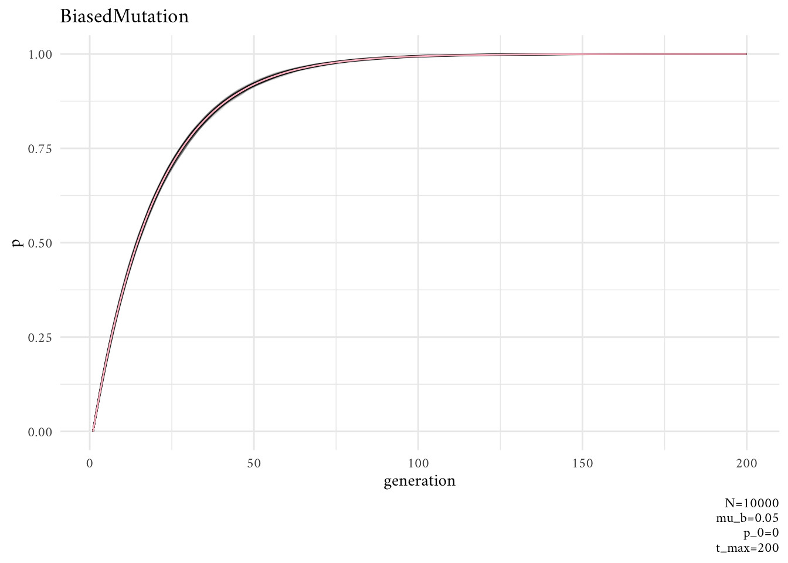
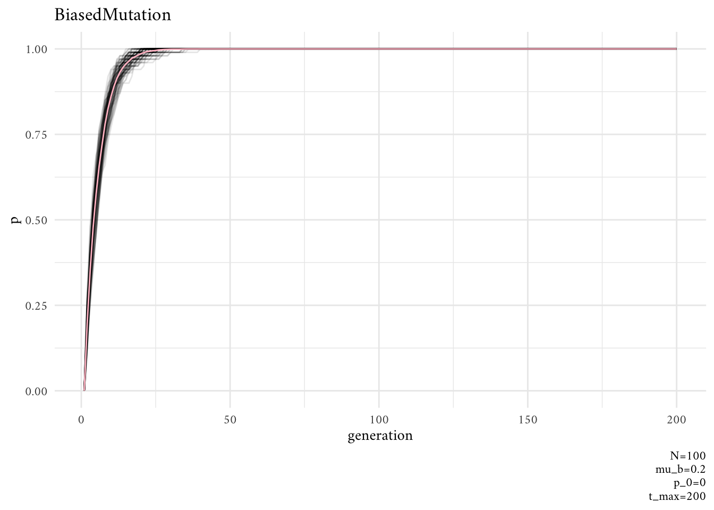

library(tidyverse)
theme_set(theme_minimal(base_family = "Amiri"))
library(future.apply)
plan(multisession, workers = parallel::detectCores() - 1L)3 Mutation
Note. All quotations come from here.
Evolution doesn’t work without a source of variation that introduces new variation upon which selection, drift and other processes can act. In genetic evolution, mutation is almost always blind with respect to function. Beneficial genetic mutations are no more likely to arise when they are needed than when they are not needed—in fact most genetic mutations are neutral or detrimental to an organism. Cultural evolution is more interesting, in that novel variation may sometimes be directed to solve specific problems, or systematically biased due to features of our cognition.
3.1 Unbiased Mutation
This model takes the same basic model as the one used in Chapter 2. We assume \(N\) individuals that possess one of two traits \((A, B)\) and a series of generations denoted by \(t\). But instead of random copying, each agent gives rise to a new agent with the same cultural trait as them.
For each generation there is a probability \(\mu\) that each agent mutates from their current trait to the other trait. This probability applies to each agent independently. This means that, on average, \(\mu N\) agents mutate each generation. Like in Chapter 2, we are interested in tracking the proportion of agents \(p\) with trait \(A\) over time.
This time I’ll create a series of helper functions from the start.
UnbiasedMutation <- function(
N, # number of agents,
mu, # mutation probability,
p_0, # initial proportion of trait "A"
t_max # number of generations
) {
agent <- sample(c("A", "B"), size = N, replace = TRUE, prob = c(p_0, 1-p_0))
p <- vector("double", length = t_max)
p[[1]] <- sum(agent == "A") / N
for (t in 2:t_max) {
previous_agent <- agent
## mutation
mutate <- runif(N)
agent[previous_agent == "A" & mutate < mu] <- "B"
agent[previous_agent == "B" & mutate < mu] <- "A"
p[[t]] <- sum(agent == "A") / N
}
return(p)
}
## helper functions
rerun_parallel <- function(S, f, ...) {
stopifnot(is.function(f))
params <- list(...)
## parallel runs
require(future.apply)
plan(multisession, workers = parallel::detectCores() - 1L)
sim <- future_replicate(S, do.call(f, params))
colnames(sim) <- paste0("run", 1:S)
## data processing
output <- tibble::as_tibble(sim) |>
tibble::rowid_to_column("generation")
structure(output, params = params, model = deparse(substitute(f)))
}
plotSimulation <- function(rerun_out) {
params <- unlist(attr(rerun_out, "params"))
param_labels <- paste(paste(names(params), params, sep = "="), collapse = "\n")
avg <- rowMeans(rerun_out |> select(!generation))
rerun_out |>
pivot_longer(!generation, names_to = "simulation", values_to = "p") |>
ggplot(aes(generation, p)) +
geom_line(alpha = 1/10, aes(group = simulation)) +
ylim(0, 1) +
geom_line( ## average
data = tibble(generation = 1:params[["t_max"]], p = avg),
color = "pink"
) +
labs(caption = param_labels, title = attr(rerun_out, "model"))
}This is how we do it 🎵
out <- rerun_parallel(S = 100, UnbiasedMutation, N = 100, mu = 0.05, t_max = 200, p_0 = 0.5)
plotSimulation(out)
As one might expect, unbiased mutation produces random fluctuations over time, and does not alter the overall frequency of \(A\) which stays around \(p=0.5\). Because mutations from \(A\) to \(B\) are as equally likely as \(B\) to \(A\), there is no overall directional trend.
But what if we were to start at different initial frequencies of \(A\) and \(B\)? Say, \(p=0.2\) or \(p=0.9\)? Would unbiased mutation keep \(p\) at these initial values, like we saw unbiased transmission does in Chapter 2?
The answer is NO.
out <- rerun_parallel(S = 100, UnbiasedMutation, N = 100, mu = 0.05, t_max = 200, p_0 = 0.1)
plotSimulation(out)
rerun_parallel(S = 100, UnbiasedMutation, N = 100, mu = 0.05, t_max = 200, p_0 = 0.99) |>
plotSimulation()
Now we’ll do the same simulation, but with three traits \((A, B, C)\).
UnbiasedMutationThreeTraits <- function(
N, # number of agents,
mu, # mutation probability,
pA_0, # initial proportion of trait "A"
pB_0, # initial proportion of trait "B"
t_max # number of generations
) {
agent <- sample(
x = c("A", "B", "C"),
size = N,
replace = TRUE,
prob = c(pA_0, pB_0, 1-pA_0-pB_0)
)
p <- vector("double", length = t_max)
p[[1]] <- sum(agent == "A") / N
for (t in 2:t_max) {
previous_agent <- agent
## mutation
mutate <- runif(N)
agent[previous_agent == "A" & mutate < mu] <- sample(c("B", "C"), size = 1)
agent[previous_agent == "B" & mutate < mu] <- sample(c("A", "C"), size = 1)
agent[previous_agent == "C" & mutate < mu] <- sample(c("A", "B"), size = 1)
p[[t]] <- sum(agent == "A") / N
}
return(p)
}Does \(p\) still converge on 0.5, as it does with only two traits?
out <- rerun_parallel(
S = 100,
f = UnbiasedMutationThreeTraits,
N = 100,
mu = 0.05,
pA_0 = 0.9,
pB_0 = 0.05,
t_max = 200
)
plotSimulation(out)
No, it converges to \(\frac{1}{3}\).
3.2 Biased Mutation
Let’s assume now that there is a probability \(\mu_b\) that an agent with trait \(B\) mutates into \(A\), but there is no possibility of trait \(A\) mutating into trait \(B\). Perhaps trait \(A\) is a particularly catchy or memorable version of a story, or an intuitive explanation of a phenomenon, and \(B\) is difficult to remember or unintuitive.
The function
BiasedMutation()captures this unidirectional mutation.
BiasedMutation <- function(
N, # number of agents,
mu_b, # mutation probability,
p_0, # initial proportion of trait "A"
t_max # number of generations
) {
agent <- sample(c("A", "B"), size = N, replace = TRUE, prob = c(p_0, 1-p_0))
p <- vector("double", length = t_max)
p[[1]] <- sum(agent == "A") / N
for (t in 2:t_max) {
previous_agent <- agent
## mutation
mutate <- runif(N)
# taking this line out makes introduces the bias:
#agent[previous_agent == "A" & mutate < mu_b] <- "B"
agent[previous_agent == "B" & mutate < mu_b] <- "A"
p[[t]] <- sum(agent == "A") / N
}
return(p)
}To see the effects of biased mutation, we’ll start with a population with all \(B\) traits.
out <- rerun_parallel(100, BiasedMutation, N = 100, mu_b = 0.05, p_0 = 0, t_max = 200)
plotSimulation(out)
We can try this same thing with different parameters for \(N\) and \(\mu_b\).
out <- rerun_parallel(100, BiasedMutation, N = 10e3, mu_b = 0.05, p_0 = 0, t_max = 200)
plotSimulation(out)
out <- rerun_parallel(100, BiasedMutation, N = 100, mu_b = 0.2, p_0 = 0, t_max = 200)
plotSimulation(out)
In terms of programming techniques, the major novelty in [this Chapter] is the use of
runifto generate a series of \(N\) random numbers from 0 to 1 and compare these to a fixed probability (in our case, \(\mu\) or \(\mu_b\)) to determine which agents should undergo whatever the fixed probability specifies (in our case, mutation). This could be done with a loop, but vectorising code in the way we did here is much faster in R than loops.